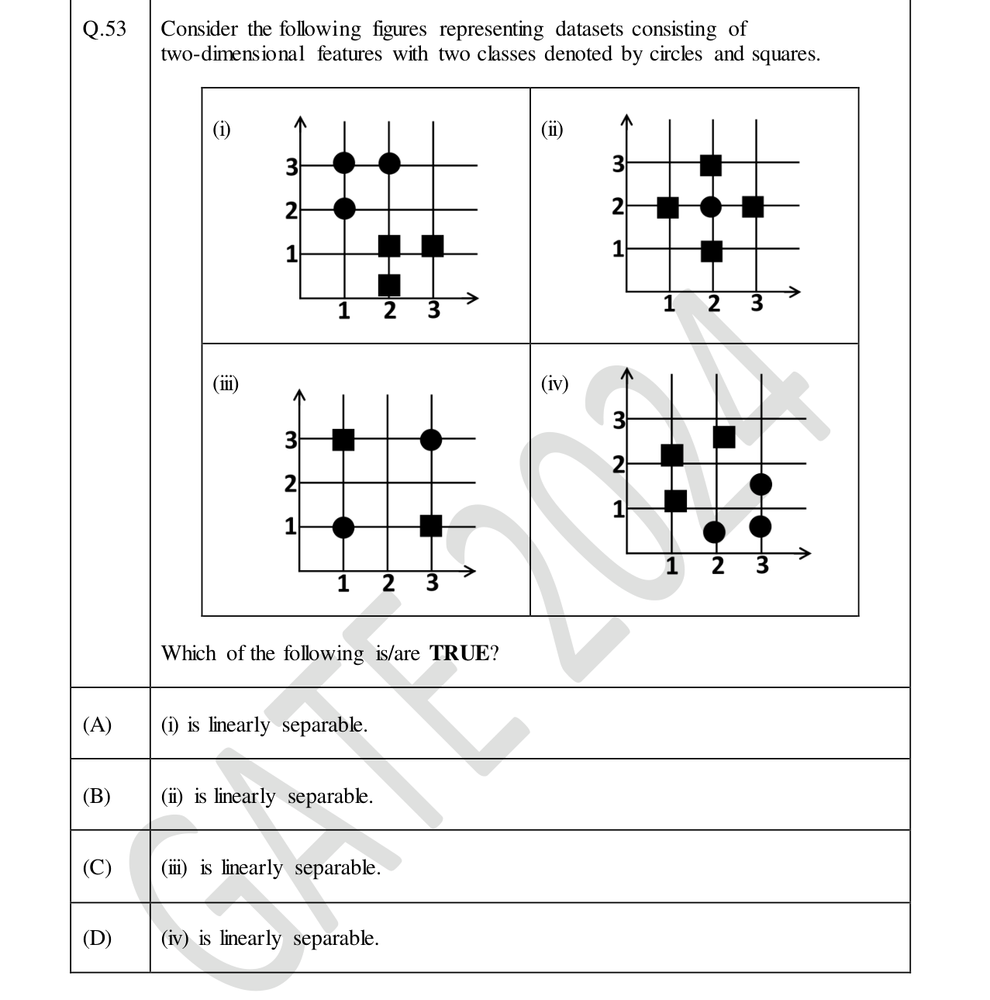
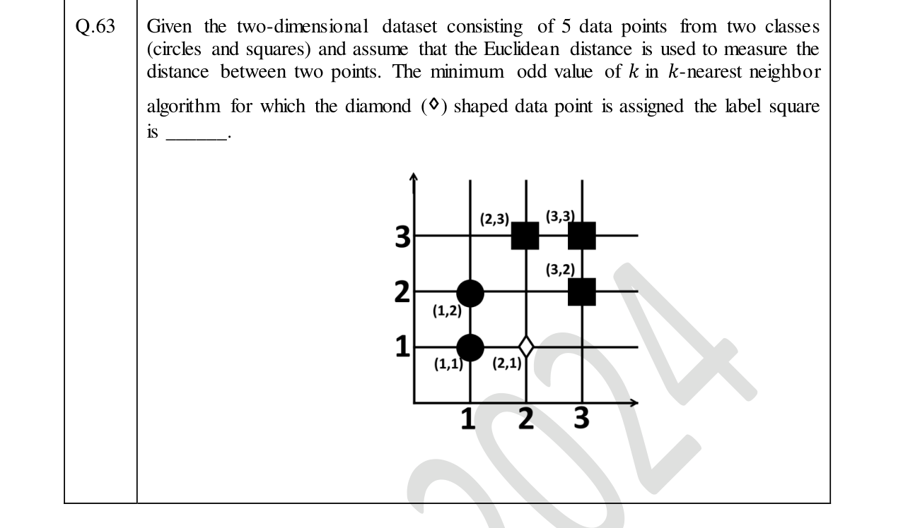

Real GATE DA 2024, 2025 & 2026 questions from the Machine Learning part of our syllabus, tagged by year. Attempt each (MCQ, MSQ or numerical) and check the official answer.
GATE DA 2026Cross-validation (LOOCV)MCQ1 mark
Q12. You train a classifier for a 10-class problem; each input is a 512-dimensional vector. There are 1000 samples, of which the first 100 are held out for testing. LOOCV is used for model selection before testing. How many validation splits are generated?
Single correct (MCQ).
LOOCV uses only the training set ($1000-100=900$ samples) and creates one split per sample, so $900$ splits.
GATE DA 2026Ridge regressionMCQ2 marks
Q37. Which of the following statements is true for Ridge Regression?
Single correct (MCQ).
Ridge adds an $L_2$ penalty (not $L_1$, B false) that shrinks the weights, trading a little more bias for lower variance (D true). It does not target negative parameters (C false), and it guards against overfitting — good on training but poor on test — the opposite of (A).
GATE DA 2026Classification metricsMSQ2 marks
Q47. 20 stories of Author X and 10 of Author Y are classified. Of X's stories, 6 are labelled Y; of Y's stories, 2 are labelled X. Taking X and Y as the two classes, which is/are true?
Multiple correct (MSQ) — select all that apply.
Correct: $14$ of X and $8$ of Y, so accuracy $=22/30=11/15$ (A; D false). $\text{Precision}_X=\tfrac{14}{14+2}=0.875>\text{Precision}_Y=\tfrac{8}{8+6}\approx0.571$ (B). $\text{Recall}_X=\tfrac{14}{20}=0.7<\text{Recall}_Y=\tfrac{8}{10}=0.8$, so C is false.
GATE DA 2026Ridge regressionNAT2 marks
Q55. Linear Ridge Regression learns $\hat y=w^{\mathsf T}x$ with $w,x\in\mathbb{R}^2$, using Mean Absolute Error and a regularizer weight $0.20$. At a step, $w=[-3.00,4.00]^{\mathsf T}$ and the input is $x=[1.00,2.00]^{\mathsf T}$, with true value $y_{\text{true}}=x_1+x_2$. What is the overall regularized loss for this instance? ______ (2 dp).
Numerical answer (NAT) — type a value and press Check.
Prediction $\hat y=w^{\mathsf T}x=(-3)(1)+(4)(2)=5$ and $y_{\text{true}}=1+2=3$, so MAE $=|5-3|=2$. The Ridge penalty is $0.20\lVert w\rVert^2=0.20(9+16)=5$. Total regularized loss $=2+5=7$.
GATE DA 2025Least-squares regressionNAT1 mark
Q34. Given data $\{(-1,1),(2,-5),(3,5)\}$, fit $y=wx$ by linear least squares. The optimal $w$ is ______ (3 dp).
Numerical answer (NAT) — type a value and press Check.
GATE DA 2025Distance-based classificationMSQ2 marks
Q55. A two-class problem in $\mathbb{R}^d$ has class means $\mu_{red},\mu_{green}$. A test point $x$ is labelled by the nearer mean using squared Euclidean distance: $f(x)=\lVert\mu_{red}-x\rVert^2-\lVert\mu_{green}-x\rVert^2$, assigning red if $f(x)<0$ and green otherwise. Which is/are correct?
Multiple correct (MSQ) — select all that apply.
Expanding, the $\lVert x\rVert^2$ terms cancel: $f(x)=\lVert\mu_{red}\rVert^2-\lVert\mu_{green}\rVert^2-2(\mu_{red}-\mu_{green})^{\mathsf T}x$ — linear in $x$ (B, C); not quadratic (D). At $x=0$, $f(0)=\lVert\mu_{red}\rVert^2-\lVert\mu_{green}\rVert^2<0$ when $\lVert\mu_{red}\rVert<\lVert\mu_{green}\rVert$, so $x=0$ is labelled red, not green (A false).
GATE DA 2024k-means clusteringMCQ1 mark
Q19. Euclidean-distance $k$-means with $k=3$ is run on 100 points. If $\begin{bmatrix}1\\1\end{bmatrix}$ and $\begin{bmatrix}-1\\1\end{bmatrix}$ are both in cluster 3, which ONE point is necessarily also in cluster 3?
Single correct (MCQ).
A $k$-means cluster region is convex, so the midpoint $\begin{bmatrix}0\\1\end{bmatrix}$ of two points in cluster 3 must also lie in cluster 3.
GATE DA 2024Logistic regression (sigmoid)NAT1 mark
Q33. Let $f(x)=\dfrac{1}{1+e^{-x}}$. The value of $f'(x)$ at the point where $f(x)=0.4$ is ______ (2 dp).
Numerical answer (NAT) — type a value and press Check.
For the sigmoid, $f'(x)=f(x)\big(1-f(x)\big)=0.4\times0.6=0.24$.
GATE DA 2024Linear separabilityMSQ2 marks

Multiple correct (MSQ) — select all that apply.
GATE DA 2024k-Nearest NeighboursNAT2 marks

Numerical answer (NAT) — type a value and press Check.
Practice Set
Extra practice question (quiz-style, not an official GATE paper) covering the same Machine Learning topics.
Practice SetClassification evaluation (ROC)MCQ2 marks
P1. True or False: The slope of the Receiver Operating Characteristic (ROC) curve represents the rate of change of the True Positive Rate (TPR) with respect to the False Positive Rate (FPR).
Single correct (MCQ).
The ROC curve plots FPR on the x-axis and TPR on the y-axis as the decision threshold varies. For any curve $y=f(x)$, the slope is $dy/dx$ by definition, so the ROC slope is literally $d(\text{TPR})/d(\text{FPR})$.